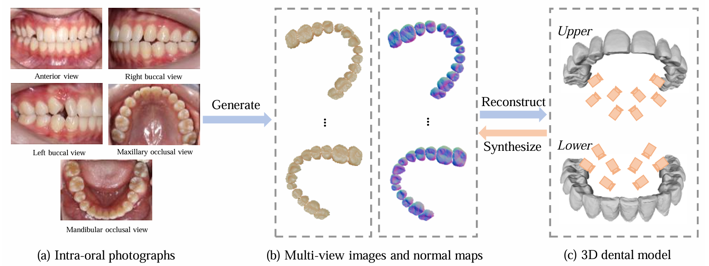
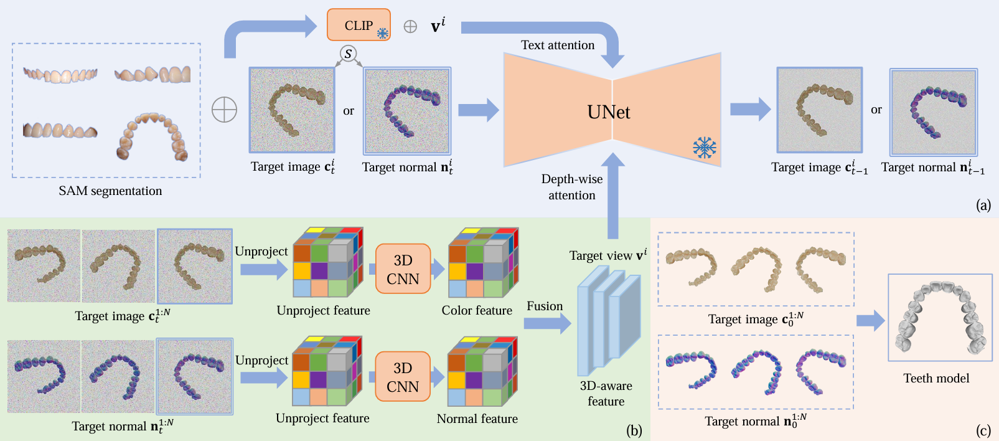
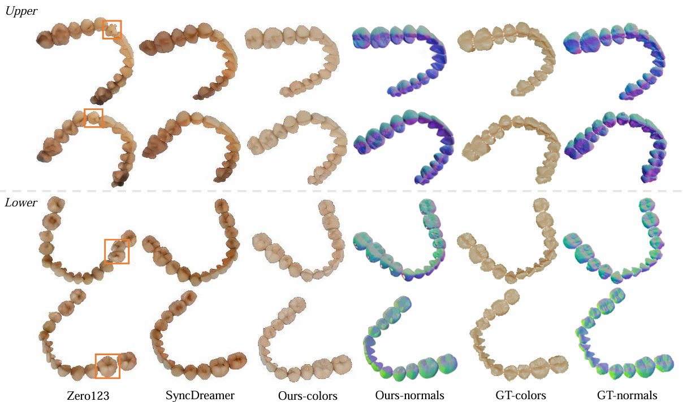
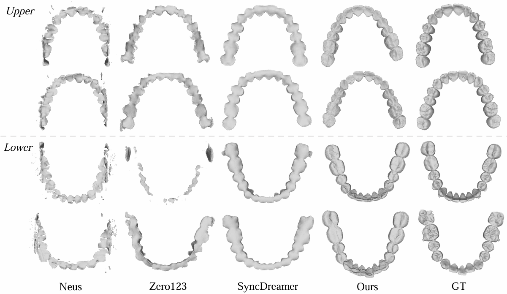
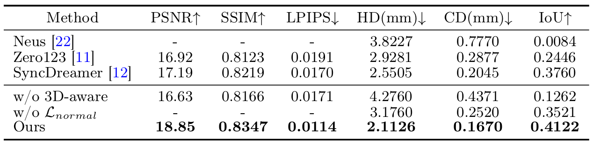

Problem Statement
Classify tooth conditions from oral images.
The core objective is to label images as Healthy, Cavity, or Misaligned using lightweight machine learning methods.
Oral Features Project
Classify tooth conditions from images
This frontend presents the project workflow from image preprocessing and classical ML baselines to evaluation, visual reporting, and the TeethDreamer 3D reconstruction extension.
Problem Statement
The core objective is to label images as Healthy, Cavity, or Misaligned using lightweight machine learning methods.
Dataset
The pipeline assumes class-organized raw images and produces a processed tabular dataset for classical ML.
Extension
When needed, the repository also supports reconstruction workflows through the existing TeethDreamer stack.
ML Pipeline
Load images from the class folders under `data/raw`.
Resize to 64×64, convert to grayscale, and flatten into feature vectors.
Fit KNN, Decision Tree, and Naive Bayes on the training split.
Measure weighted accuracy, precision, recall, and F1-score.
Models Used
KNN
k = 3Useful as a sanity check when the dataset is small and class boundaries are locally structured.
Decision Tree
InterpretableSupports human-readable comparisons and feature-importance visualizations in the results folder.
Naive Bayes
ProbabilisticProvides a lightweight statistical baseline that can be compared directly against the other models.
Visualizations





Ethical Considerations
Remove patient identifiers before storage or training and keep access limited to the project scope.
Check whether model performance changes across classes or demographics and report those gaps clearly.
Document the dataset source, preprocessing assumptions, and known limitations in the README and notebooks.
Disease Predictor
Command Runner
Command execution is now isolated on its own page so this landing view stays focused on project context, while the runner page handles setup, command execution, and terminal logs.
Advanced Extension
The repository already includes the dedicated 3D reconstruction stack. This frontend presents that work as an optional extension to the image-classification pipeline.